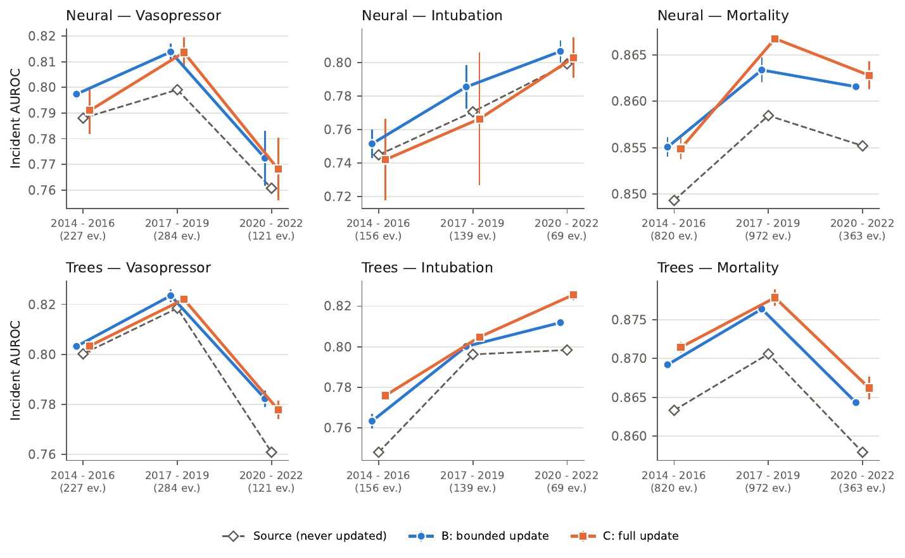

Audit Before You Update: Recording Artifacts and the Limits of Bounded Model Updates in MIMIC-IV ICU Prediction
The question
ICU prediction models lose accuracy over time, and the usual answer is to retrain them. But part of what looks like drift in a hospital database is not a change in patients at all: it is a change in how things were recorded. Before updating a model, we should check what actually changed.
This paper builds and tests a change-control pipeline for that: audit the data first, update only when drift is detected, prefer the smallest update that works, and verify that the model's explanations still make sense afterwards.
What the audit found
Auditing MIMIC-IV 3.1 across 2008–2022 turned up recording artifacts that a drift detector or a retrained model would otherwise learn as if they were clinical change:
- Missing tables: input and procedure records missing for a cluster of ICU stays in 2020–2022.
- eMAR onset: electronic medication administration records only become available during 2011–2013.
- Vasopressor ItemID migration: the codes used to record vasopressors change over time, which silently changes the label.
Every result is reported on the cleaned cohort, and the retained and excluded stays are compared to check the cleaning did not bias the sample.
Method: four phases
- Audit the data and remove recording artifacts.
- Gate updates on label-free drift detection: classifier two-sample tests with patient-clustered bootstrap calibration. A replay of the gated schedule on null data raised no false alarms.
- Adapt a model trained on 2008–2013 to three later eras (2014–2016, 2017–2019, 2020–2022), comparing a never-updated source model (A), a bounded update that retrains only the treatment-context encoder and fusion head (B), and a full update (C). Both two-stream neural models (LSTM + MLP) and modular gradient-boosted trees, for vasopressor, intubation and mortality prediction.
- Verify that explanations (Integrated Gradients, TreeSHAP) and literature retrieval (MedCPT over PubMed) stay consistent after the update.
Comparisons use a pre-specified non-inferiority margin of 0.015 AUROC, five seeds, and matched hyperparameters (shared and separately tuned learning rates).
Results

The paper's non-inferiority analysis then tests, for each task and era, whether the bounded update stays within 0.015 AUROC of the full update, and reports the cases where it does not: the limits in the title.
Data and reproducibility
MIMIC-IV requires credentialed PhysioNet access. Following the data use agreement, no patient-level records, embeddings or model weights are published; the repository contains the full pipeline, the audit queries and their verification scripts, aggregate results, and the manuscript source.